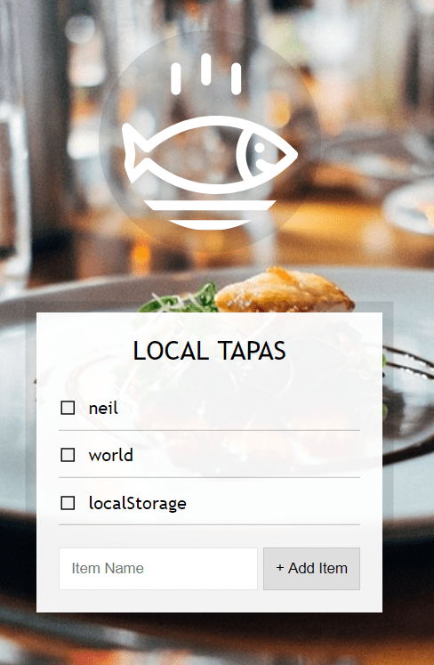

【JS30】LocalStorage
15 — LocalStorage

主題
這篇介紹LocalStorage的用法，
透過一個小菜單來透過localstorage做資料增刪功能。
步驟
Step1. 基礎設定
作者已經設定好這篇練習用的html與css，
主要的架構由一個div包著ul與from，
類似Todo-List的清單(ul)與輸入欄位(form)。
Step2. 撰寫輸入欄位新增功能
首先取得 form 元素及 ul，並宣告一個空陣列來存放新增資料。
1 | const addItems = document.querySelector('.add-items'); |
接著撰寫一個addItem，參照備註:
1 | function addItem(e) { |
這樣每次submit後items就會新增在輸入欄位中的物件了！
Step3. 顯示新增的清單
在上一個步驟中所做的只有存於宣告的陣列中，
並沒有抓出來顯示在HTML中，所以要寫一個function來顯示：
1 | // ES6可在function中的參數直接設定參數預設值 |
然後要記得回到addItem中把platesList放在items.push(item)後面，
讓每次輸入送出後都會執行這個function重新列出組成的物件字串。
Step4. 加入LocalStorage
當完成了新增功能後，就要進入主軸LocalStorage了，
這可以讓瀏覽器存取你設定在這個頁面的資訊，
所以首先在addItem中修改加入這段：
1 | function addItem(e) { |
這裡將items的資訊存在localStorage中一個叫做items的自訂物件中，
注意的是存入的物件或陣列必須透過JSON.stringify轉為字串，
因為localStorage中的值是string，否則直接存只會得到”object object”的字串。
接著修改最一開始宣告的items:
1 | const items = JSON.parse(localStorage.getItem('items')) || []; |
讓頁面在重整後，先判斷localStorage中是否有存放items物件，沒有的話則給空陣列。
Step5. 儲存checkbox狀態
這裡要新增一個function toggleDone並監聽itemsList的click動作，
1 | function toggleDone(e) { |
JavaScript語法&備註
Array.prototype.map()
map方法會建立一個新的陣列，其內容為原陣列的每一個元素經由回呼函式運算後所回傳的結果之集合，
map裡面可以放入function來對前面的array進行處理
LocalStorage
- Post title：【JS30】LocalStorage
- Post author：Neil Yang
- Create time：2019-05-22 00:00:00
- Post link：https://des86532.github.io/2019/05/22/JS30/JS30-localstorage/
- Copyright Notice：All articles in this blog are licensed under BY-NC-SA unless stating additionally.